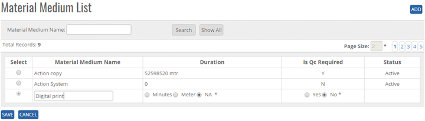
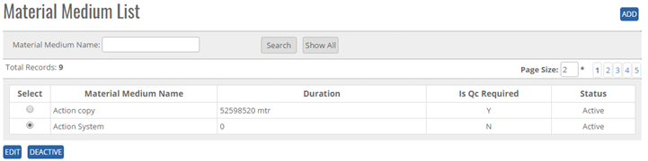


	<section>
		<article>
			<h2>Material<span></span></h2>
			<p></p>
			<h2>Material Medium<span></span></h2>
			<div>
				<p></p>
				

				<p>Material Medium comes under master module. It can be accessed by user who has rights for this module.</p>

				<p>Go To >> Master >> Material>>Material Medium>><b>ADD</b></p>

				<p>Click on add button at top right corner of the page and the following page will open.</p>

				<div class="triangle-border top">
					
				</div>

				<p><b>To ADD a "Material Medium" in the system, system will have following fields.</b></p>

				<p>- User can enter Material medium Name in the Text Box. (Alphanumeric is valid)</p>

				<p>- User can enter Duration in text box on Selection of radio button such as Meter or Minutes only. (Text box is not available for the NA, Its mandatory to select any one radio button)</p>

				<p>- User can select Is QC Required from radio button ("Yes" or "No") by default one is selected.</p>

				<p>Click on <b>ADD Button</b>, Enter a Material Type Details </p>

				<p>Click on <b>Save Button</b>, user will get alert message <b>"Material Medium Record Saved Successfully"</b></p>

				<p>Click on <b>Cancel Button</b> the add operations and previous window will appear and data should not be saved.</p>

				<p><b>Note:</b> "Material Medium Name" will be unique in the system. </p>
					   <p>Status will be Active By default</p>


				<p><b>Modifying an Existing Material Medium</b></p>

				<p>The user who has rights to edit can edit the existing "Material Medium" in the system. All the fields can be edited by user, which impacts all its references in the system. </p>

				<p>Click <b>Edit</b>, Edit Material Medium List Column will be shown Material Medium Name as per added previously.</p>

				<p>Go To >> Master>>Material>>Material Medium>Click Radio Button (Material Medium Name) >> <b>EDIT</b></p>

				<div class="triangle-border top">
					
				</div>


				<p>System will allow editing all the Material Medium details. </p>

				<p>Click <b>Update</b> to save the currently added operations, user will get alert message <b>"Material Medium Record Updated Successfully"</b>.</p>

				<p>Click <b>Cancel</b> to cancel the add operations and previous window will appears and data should not save.</p>


				<p><b>De-Activate / Activate existing Material Medium</b></p>

				<p><b>DeActive</b> - Click on Deactivate Button, once the button is clicked, it will ask confirmation message "Are you sure you want to Deactivate this record" with "OK and cancel" button.</p>

				<p>If user clicks on OK Button, record will get deactivated and if clicked on Cancel, record will not get deactivated.</p>

				<p><b>Active</b> - Same way once a record is deactivated, system will show Active button. If user clicks on Active button, record will get activated.</p>


				<p><b>Search /Show All Criteria</b></p>

				<p>- User can search the Material Medium Name and then click on <b>Search</b>, it will show the result as per the search criteria. User can search name by single alphabet.</p>

				<p>- If user want to check all Material Medium Name then click on <b>Show All</b> Button. It will show the list</p> 

				<p>- Click on page no, System will navigate the desired page, per page 10 records will be displayed. </p>
			</div>
		</article>
	</section>